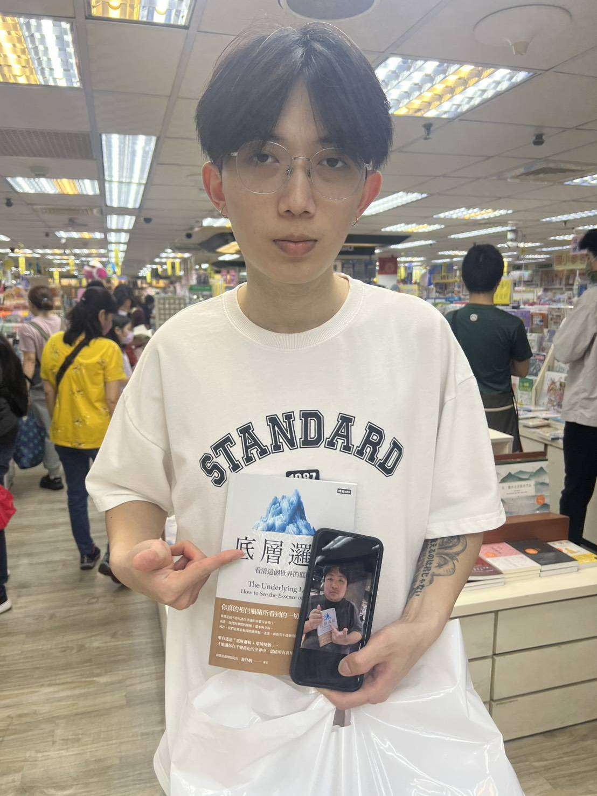
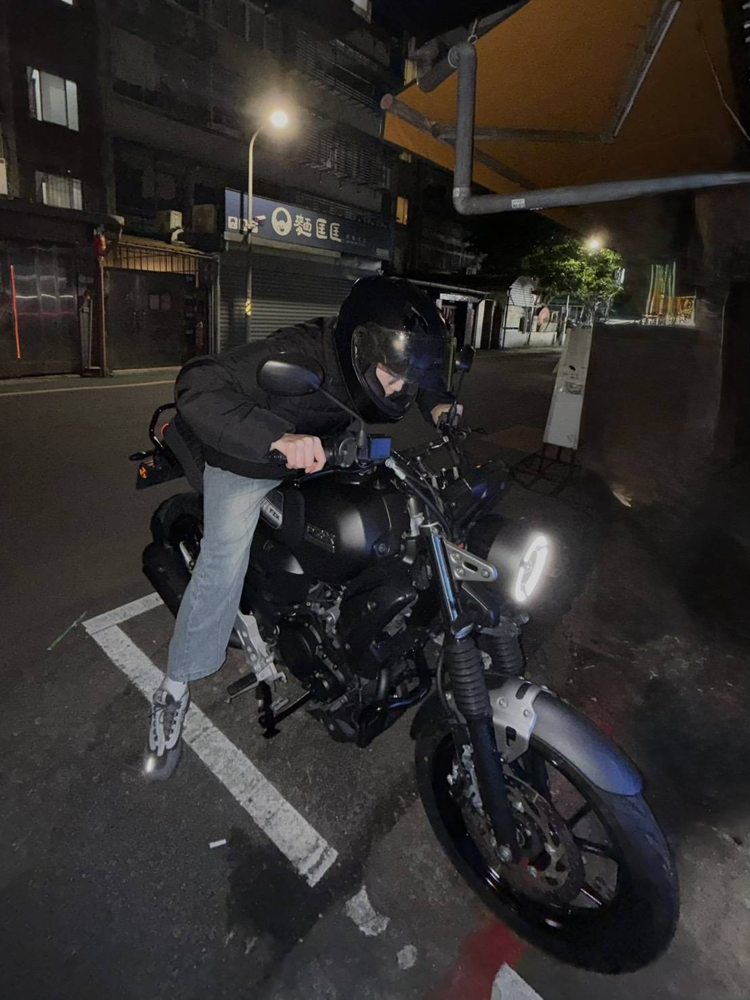
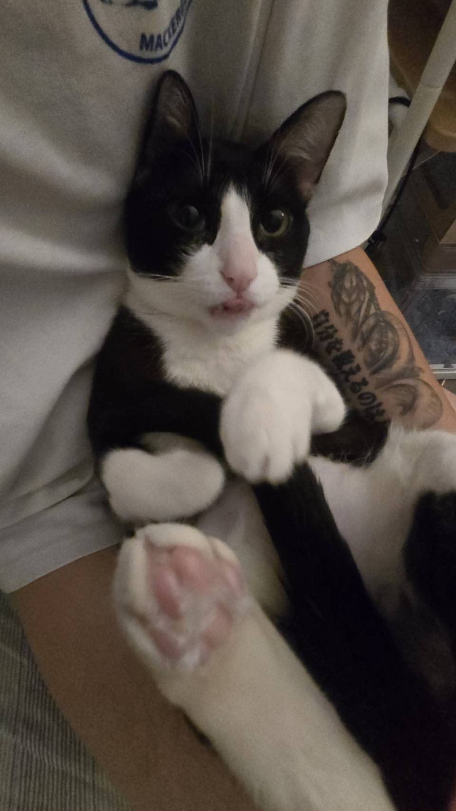

世新大學 資訊傳播學系

你好！我是陳譽升，目前就讀於世新大學資訊傳播學系。我對數位媒體創作充滿熱情，擅長影像剪輯與資訊整合。在求學期間，我透過多樣的工讀經驗， 如在 Oneboy、Comebuy 與台灣壽司郎工作，培養了極佳的抗壓性、責任感與團隊協作能力。我喜愛將科技與生活結合，例如利用 AI 輔助影片創作， 或是透過數位攝影紀錄生活細節。我致力於精進網頁開發與數位傳播技能，期待未來能將這些專長應用於專業領域。
專業技能： 影像剪輯與腳本企劃、基礎網頁開發 (HTML/CSS)、數位資訊組織、Java 程式設計基礎。
個人興趣： 復古機車改裝 (Yamaha FZ-X 150)、數位攝影、犯罪懸疑影集、Jazzy Hip Hop 音樂。
運用 AI 工具輔助腳本與剪輯，完成具教育意義的 10 分鐘歷史敘事影片。
影音專案的線上展示與實務剪輯紀錄。

紀錄機車懸吊與制動系統升級過程，展現對機械構造與美學的理解。

收錄家裡寵物的日常生活照，練習構圖與視覺表達。